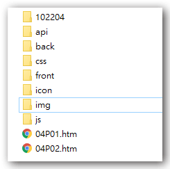
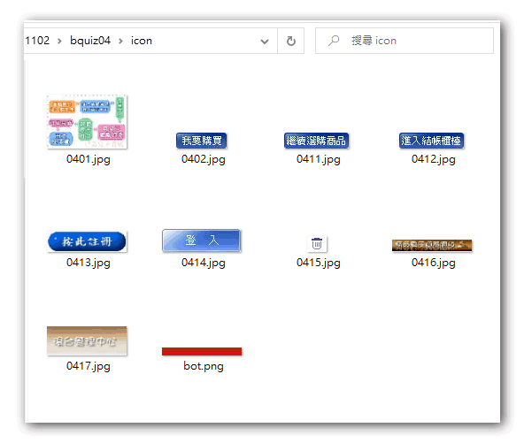
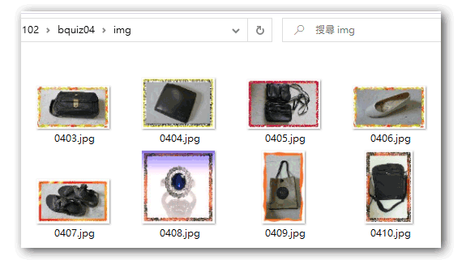
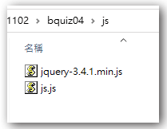
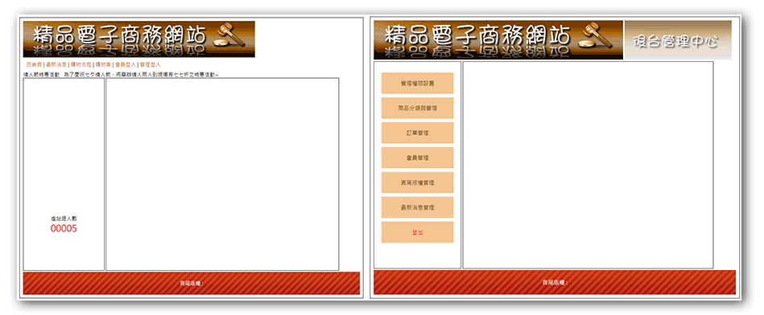
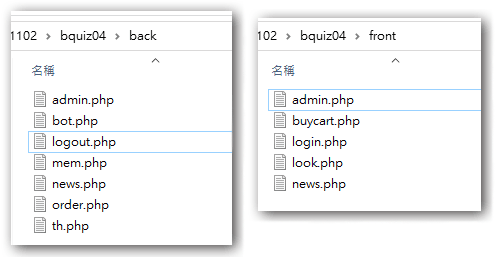

- 建立 ./css, ./js, ./api, ./icon, ./img, ./front, ./back 等常用目錄以利檔案分類及管理
- 將素材檔中的 .css, .js, 及 icon 圖檔複製到相應的目錄下，商品的圖檔也一併先複製到 ./img，這可以相當程度的簡化解題的步驟。



- 此題組版型中沒有包含jQuery，請至函式庫目錄下或其他題組的素材中複製jQuery檔案至 ./js目錄下

- 更改版型素材的相關檔名，以符合解題的需要：
- 04P01.htm => index.php
- 04P02.htm => back.php
- 更改版型素材的相關連結及匯入檔內容
- 修改
index.php及back.php中<link>及<script>中的連結路徑，指向正確的位置 - 記得加入
jQuery的路徑1
2
3<link href="./css/css.css" rel="stylesheet" type="text/css">
<script src="./js/js.js"></script>
<script src="./js/jquery-3.4.1.min.js"></script> - 修改
index.php&back.php中的圖片連結 ，指向根目錄下的./icon1
2
3
4
5<!--index.php-->
<div id="top">
<a href="index.php">
<img src="./icon/0416.jpg">
</a>1
2
3
4
5
6
7<!--back.php-->
<div id="top">
<a href="index.php">
<img src="./icon/0416.jpg">
</a>
<img src="./icon/0417.jpg">
</div>
- 修改
- 開啟
xampp及apache伺服器，使用localhost或127.0.0.1檢視網頁是否正確顯示，css 的載入是否正確

- 在
index.php中找到中間主要內容區的right區塊，我們會在這裏建立include的語法，用來載入各個功能的內容。 - 在
back.php中找到中間主要內容區的right區塊，我們會在這裏建立include的語法，用來載入各個功能的內容。 - 使用
include指令來重新組合index.php及back.php頁面，並加上判斷式來確保要組合的檔案是存在的，要注意的是根據題意，後台的首頁是管理員管理頁面，所以後台的首頁檔名設為admin.php。 - 以
get的方式來傳遞各頁面要組合的元件內容，比如do=login表示要看到的是登入頁面，因此在前台的include中可以併入login.php來呈現。1
2
3
4
5
6
7
8
9
10
11
12
13//index.php
<div id="right">
$do=$_GET["do"]??"main";
$file="front/".$do.".php";
if(file_exists($file)){
include $file;
}else{
include "front/main.php";
}
</div>
1
2
3
4
5
6
7
8
9
10
11
12
13//back.php
<div id="right">
$do=$_GET["do"]??"admin";
$file="back/".$do.".php";
if(file_exists($file)){
include $file;
}else{
include "back/admin.php";
}
</div> - 修改
index.php及back.php中的連結內容及寫法，確保可以正確的連結到相應的頁面。1
2
3
4
5
6
7
8
9<!--index.php-->
<div style="padding:10px;">
<a href="index.php">回首頁</a> |
<a href="?do=news">最新消息</a> |
<a href="?do=look">購物流程</a> |
<a href="?do=buycart">購物車</a> |
<a href="?do=login">會員登入</a> |
<a href="?do=admin">管理登入</a>
</div>1
2
3
4
5
6
7
8
9
10
11
12<!--back.php-->
<div id="left" class="ct">
<div style="min-height:400px;">
<a href="?do=admin">管理權限設置</a>
<a href="?do=th">商品分類與管理</a>
<a href="?do=order">訂單管理</a>
<a href="?do=mem">會員管理</a>
<a href="?do=bot">頁尾版權管理</a>
<a href="?do=news">最新消息管理</a>
<a href="?do=logout" style="color:#f00;">登出</a>
</div>
</div> - 可以依照選單的連結預先在
./front/及./back/目錄中建立所需的連結頁面，可以節省後續製作的檔案操作時間。
